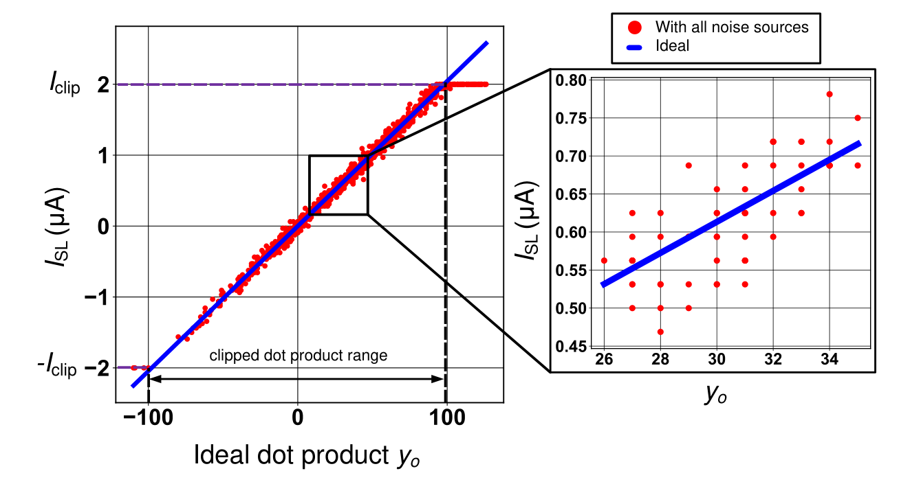

Bitcell variation
Gon and Goff vary across the array, modeled with a 4% standard-deviation-to-mean ratio.
Architecture
Voltage DACs drive the bit-lines while each source-line current passes through a transimpedance amplifier and ADC. The sensing resistance connects the analog array to the available conversion range.
Crossbar operation
Bit-lines (BLs) run perpendicular to source-lines (SLs), with a 1T1R bitcell at each crossing. DACs drive the BLs, and the TIA on each SL holds the line at VDC. Activating M word-lines computes an M × N matrix-vector multiplication in one step.

Weight encoding
Finite Ron and Roff leave a current even at a zero dot product. Differential encoding removes it: adjacent columns receive opposite-sign inputs, and a bitcell pair stores one ternary weight. An N-term dot product therefore occupies 2N physical columns.
Signal model
Rs appears in parallel with the array resistance Rarr, so the SL delivers only a fraction SI of the ideal current. Since Rarr ∝ 1/N, a longer dot product shrinks the signal, and lowering Rs recovers it. However, an Rs below about 500 Ω carries significant area overhead.
Noise model
Gon and Goff vary across the array, modeled with a 4% standard-deviation-to-mean ratio.
DAC finger mismatch adds noise that grows with the input, modeled at 4% per finger.
SL current beyond ±Iclip = ±2 µA saturates at the ADC rail.
A BADC-bit ADC adds uniform noise over one step of the clipping range.

Compute SNR
Currents beyond ±Iclip collapse onto the rails, and the remaining noise scatters samples around the ideal line. Compute SNR compares the signal power with the total power of the four noise terms.
Model boundary
The reported limits are conditional on these assumptions and the evaluation parameters.